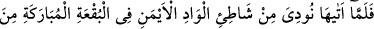
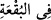

kor “getiririm, dedi.”
“, sebat ederek beklemek, demektir. el-Müfredat’ta der ki: “, tutuşup
yanan odunların geriye bıraktığı “kor”a denir. “ ısınmak demektir. Keşfü’l-
esrâr’da ise “ateşte ısınmak” anlamına geldiği kaydedilmiştir.
et-Te’vîlatü’n-Necmiyye’de âyet tasavvufî olarak şu şekilde yorumlanır: Burada
zâhirde insanı Allah’dan alıkoyan şeyleri terk etmeye (tecrîd) ve bâtında ise Allah’la
başbaşa kalmağa (tefrîd) işâret vardır. Çünkü sâlik sülûkte zâhirini ehil ve maldan
tecrid edip dünya sevgisini kalbinden tamamen çıkarmalıdır. Zira mükâteb (sözleşmeli)
köle; bir dirhem bile olsa üzerinde borcu kaldığı sürece köledir, denilmiştir. Sonra
sâlik, her iki dünyadan bâtınî olarak da alâkasını kesmeli, kendisini arındırmalı ve
Allah ile başbaşa kalmağa gayret etmelidir. Çünkü o, dünya ve âhiret endişelerinden
kendisini uzaklaştırabildiği ölçüde tevhîd müşâhedelerini seyreder. Ona ilk görünen
şey, Mûsâ (a.s.)’a ateşin ve İbrâhim (a.s.)’a yıldızın görünmesinde olduğu gibi, ateş
alevi şeklinde olur. İşte rubûbiyyet nûrunun ülûhiyyet matla’ından (doğma yeri) tecellî
etmesine kadar görülen ve tasavvufta levâmi’ (parıltı, ışıltı), tavâli’ (talihler, kısmetler),
sevâtı’ (yüksek şeyler), şümûs (güneşler) ve akmâr (aylar) gibi kavramlarla ifâde edilen
hususlar, bu ateş (nur) cümlesindendir.
Yine et-Te’vîlâtü’n-Necmiyye’de der ki: Burada insan olmanın (insaniyet) vasıf ve
özelliklerinin tabiat soğukluğu ile donduğuna ve bunların ancak muhabbet ateşi ve hatta
ilâhî cezbe ile ısındığına işâret vardır.
Kemâl Hucendî der ki: Nazar ehlinin (Ehlullahın) gözünde muhabbet ateşiyle
yanmamış bir gönül, pervaneden daha değersizdir.
Böylece Mûsâ (a.s.) âilesini sahrada bırakıp gitti.
30. Oraya gelince, o mübarek yerdeki vâdinin sağ kıyısından, (oradaki) ağaç
tarafından kendisine şöyle seslenildi: Ey Mûsâ! Bil ki ben, bütün âlemlerin Rabbi
olan Allah’ım.
“Oraya” yâni gördüğü vâdînin kenarına “gelince, o mübarek yerdeki vâdinin sağ
kıyısından,”
;  kelimesinin sıfatıdır ve bu nedenle mecrûr’dur. kelimesi ise
kelimesinin sıfatıdır ve bu nedenle mecrûr’dur. kelimesi ise
yan, kenar anlamına gelir. Vâdî; aslında suyun aktığı yerin adıdır. Bu sebeple iki dağ
arasına da “vâdî” denilmiştir. “ ” ifâdesi, kelimesine muttasıldır
yahut da fiilinin sılâsıdır. , aslında üzerinde ağaç bulunmayan yer anlamına
gelir. “Mübârek” denilmesinin sebebi ise Mûsâ (a.s.)’ın peygamberliği burada
başladığı ve Allah ile burada konuştuğu içindir.